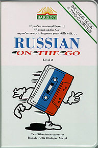

Page index / publications
Russian on the Go II

Russian On The Go: Level 2.Text and two cassettes.
(Barron's: 1995)
ISBN 0-8120-8211-7
Lively dramatized conversations in Russian presenting the basics in vocabulary and grammar to make your way through Russia. Especially good if you have only an hour or so, on the plane, driving your car or jogging the streets of Moscow.